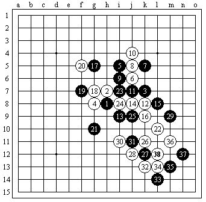

两个小问题--大残月
首页
妖刀天下
#1 两个小问题--大残月 作者：零零星星 发表时间：2009-7-7 9:12:53
这个10黑能杀吗？或者怎么走才好？
=======上图对应的爱五子棋谱代码如下，以便你拆解：========
h8h9k9g7i11j10k11j11i10j12
======================================================还有这个7怎么样？对这个8该怎么走？
=======上图对应的爱五子棋谱代码如下，以便你拆解：========
h8h9k9j9j8i7i9j10
======================================================
#2 Re:两个小问题 作者：陨落之城 发表时间：2009-7-7 10:08:36
第一个图参考ShowPost.asp?PageIndex=4&ThreadID=4907
［ 星雨 于 2009-7-19 9:48:46 时花20金币送鲜花一朵］
#3 Re:两个小问题--大残月 作者：安娜制作所 发表时间：2009-7-14 11:33:10

找到了！
#4 Re:两个小问题--大残月 作者：失落刀 发表时间：2009-9-20 17:02:23
=======上图对应的爱五子棋谱代码如下，以便你拆解：========
h8h9k9j9j10a1i7
======================================================